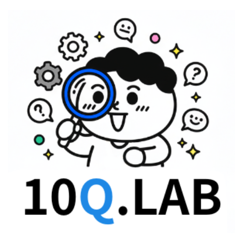
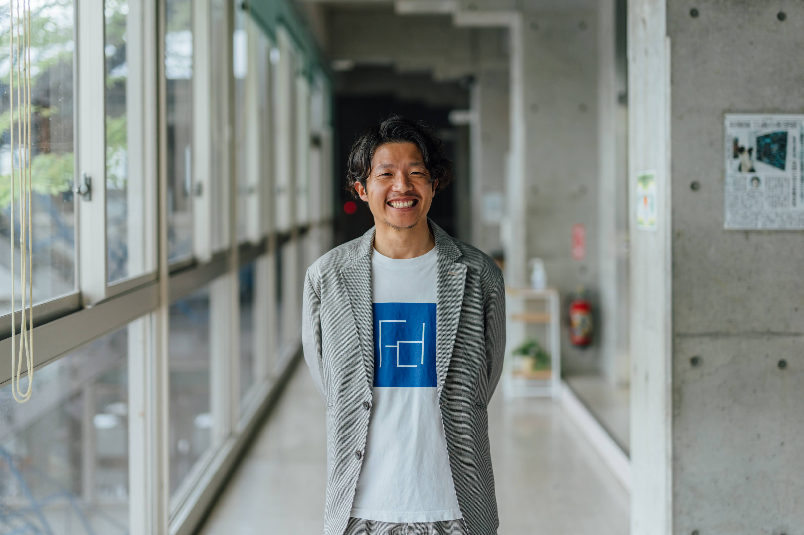

あなたの「問い」を育て、変化で応える。
あなたの歩みに伴走する、大人の探究塾。
自分の問いを見つけ、実践を重ね、仲間と共有しながら
人生と社会を豊かにデザインしていく──
10Q.LABは、そんな場を育てます。

学びもチャレンジも、大人になった今だからこそ面白い。
その姿は、自分の可能性を拓き、周りにもいい風を届ける。
10Q.LABは、あなたの「問い」を育て、仲間と分かち合い、行動へとつなげる場です。
ここで育まれる問いには、2つのかたちがあります。
ひとつは、自分に向けた問い。
行動の中から自然と浮かび上がり、次の一歩を照らす"内なる声"のようなもの。
もうひとつは、他者に向けた問い。
相手を理解し、関係性を深めるために意識して使う"問いの技術"。ただ興味関心で終わらず、どんな相手とも対話をひらく力になります。
みやっちが伴走しながら、問いのかたちに合わせて関わり方を選び、
探究と成長の流れを支えていきます。
そのために、みやっちはこんな関わりを意識しています：
参加者が今抱えている問いや、動いてみた実践を気軽に言葉にする場です。仲間の実践や問いに触れることで、新たな視点や刺激を得て、自分の行動につながるきっかけが生まれます。
問いの投げ方を学び合うレッスンの場でもあり、みやっちが毎月テーマに沿った問いの型を紹介。対話を通じて"問う技術"を実践的に育てていきます。
詳しく見る →10Q.LABの会員が持ち回りで"講師役"を務め、実践に役立つ知識や視点を共有し、そのインプットをもとにグループでアウトプットを生み出す学びの場。この学習会は、10Q.LABの外にも開かれたオープンな場として、会員以外の参加も歓迎しています。
詳しく見る →みやっちが参加者の問いに寄り添い、チャレンジしたいことに向けて月2回の1対1オンラインと個人メッセージのやり取りを通じて定期的にフィードバックします。「教える」「深める」「つなぐ」など、みやっちならではの関わり方が特徴です。
詳しく見る →年に1度、参加者が育ててきた問いや実践を発表・共有する学びと祝福の祭典のような場。集合＋オンラインのハイブリッド形式で聞き手も発表者も刺激と喜びを分かち合います。
次回は2026年10月11日開催予定。
詳しく見る →
10Q.LABでは、人と人とのつながりを大切にしながら、一人ひとりの問いに真剣に向き合っています。 みやっちは、それぞれの個性や可能性が拓かれる瞬間に立ち会うことに、深い喜びと情熱を感じています。
私たちは、参加者が抱える問いや課題を丁寧に受けとめ、 その人らしい探究のかたちを一緒に見つけていくことを大切にしています。 問いを育て、行動につなげるプロセスを支えながら、目指す未来に向けて伴走します。
これからも、問いを軸にした関係性を育みながら、 参加者にとって信頼できるパートナーであり続けるよう、日々探究を重ねていきます。
講師の詳細プロフィールを見る →10Q.LABにご関心をお寄せいただき、ありがとうございます。 プログラムに関するご依頼やご相談は、どうぞお気軽にお問い合わせください。 内容を確認のうえ、事務局よりご連絡させていただきます。